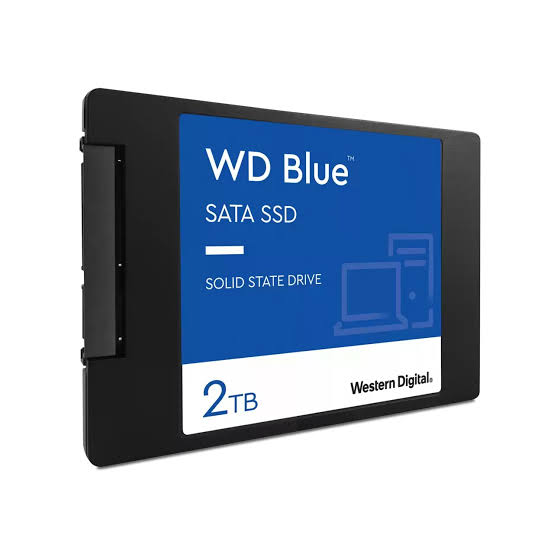
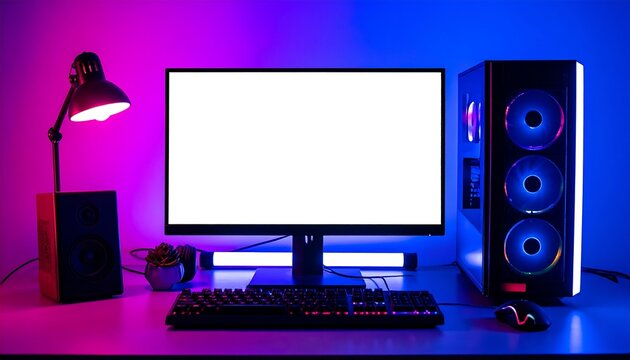

NOVEDAD
NOVEDAD
Abrimos nuestra tienda online
Tecno Factory ya está disponible en línea: conoce por qué decidimos dar el salto al ecommerce y qué viene después.
Leer másAquí podrás encontrar noticias de la tienda, lanzamientos y datos curiosos sobre tecnología, seleccionados por el equipo de Tecno Factory.
NOVEDAD
Tecno Factory ya está disponible en línea: conoce por qué decidimos dar el salto al ecommerce y qué viene después.
Leer más
DATO CURIOSO¿Sabías que el primer SSD comercial costaba miles de dólares por apenas unos megabytes? Te contamos esto y más.
Leer más
PRÓXIMAMENTEEstamos preparando una guía completa para elegir monitor, teclado y mouse según tu forma de trabajar. Vuelve pronto.
Próximamente